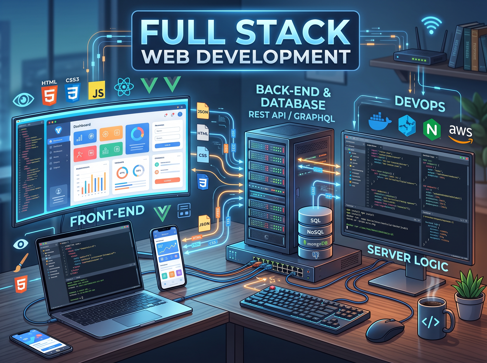

Desarrollo Web Full-Stack
Arquitectura y Experiencia de Usuario
Desarrollo plataformas web integrales que combinan bases de datos robustas con interfaces intuitivas, asegurando un rendimiento óptimo, seguridad en la gestión de datos y una experiencia de usuario fluida desde cualquier dispositivo.

Desarrollo Web Full-Stack: Plataformas a la Medida y Escalables
Ofrezco el desarrollo integral de sistemas web, cubriendo tanto la arquitectura del servidor (Back-end) como la interfaz visual (Front-end). Mi enfoque garantiza que la lógica de negocio y el manejo de datos se integren a la perfección con diseños interactivos y fáciles de usar. Construyo soluciones tecnológicas robustas que permiten a las organizaciones administrar sus servicios, usuarios y procesos operativos desde una plataforma centralizada, segura y de alta disponibilidad.
- Diseño y administración de bases de datos relacionales y no relacionales (MySQL, MongoDB) para un manejo de información estructurado.
- Desarrollo lógico (Back-end) utilizando frameworks ágiles y seguros (CodeIgniter 4, PHP) para garantizar la estabilidad y rendimiento del servidor.
- Creación de interfaces dinámicas y responsivas (JavaScript, HTML, CSS), aplicando principios de diseño UI/UX para una adopción rápida por parte del usuario final.
El éxito de una aplicación web radica en su capacidad para procesar requerimientos complejos de forma completamente transparente para el usuario. Durante mi trayectoria, he liderado la creación de sistemas completos de gestión, como la plataforma de servicios desarrollada para el LIEE-INAOE y diversos laboratorios universitarios. Estos proyectos demandaron una planificación arquitectónica precisa y la implementación de tecnologías full-stack para conectar eficientemente los motores de bases de datos con los paneles de administración institucionales.
Ya sea que tu organización necesite un portal personalizado para gestionar solicitudes de clientes, un panel administrativo interno o una plataforma interactiva, me encargo de construir el software desde sus cimientos. Aseguro la escritura de código limpio, la integración fluida de múltiples tecnologías y una arquitectura sólida para que tu empresa cuente con una herramienta web potente, escalable y preparada para evolucionar junto con el negocio.